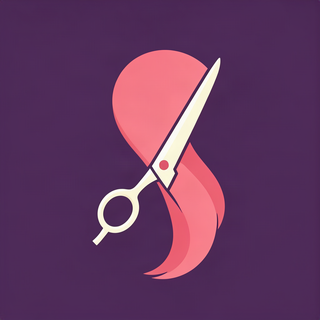

1
Hizmetini ve bölgeni seç
Berberden kuaföre, nail art’tan cilt bakımına kadar ihtiyacın olan kategoriyi yakınında ara.
Kuaför • Berber • Güzellik
İyiBak; kuaför, berber, nail art ve kişisel bakım randevunu tek tek telefon etmeden planlamana yardımcı olur. Sana yakın seçenekleri keşfet, işletmenin listelediği fiyatı ve uygun saati gör, kararını gitmeden ver.
Uygulama cihazında yüklüyse İyiBak doğrudan açılır.


Üç kolay adım
İşletmeleri tek tek aramak yerine ihtiyacını, konumunu ve programını aynı ekranda buluştur.
Berberden kuaföre, nail art’tan cilt bakımına kadar ihtiyacın olan kategoriyi yakınında ara.
İşletmelerin listelediği hizmet fiyatlarını ve güncel uygun saatleri karşılaştır.
Tercih ettiğin çalışanı ve zamanı seç; randevu saatinde doğrudan işletmeye git.
Bakım rutinin tek yerde
Günlük bakımından özel gün hazırlığına kadar farklı hizmetleri, programına uyan saat üzerinden keşfet.

Saç kesimi, sakal tıraşı ve bakım için yakınındaki uygun saatleri incele.
Kesim, fön, boya ve saç bakımı seçeneklerini fiyat ve saat bilgisiyle değerlendir.
Nail art, manikür, kaş-kirpik ve diğer bakım hizmetleri için randevunu planla.
Daha az belirsizlik
İyiBak, karar anındaki temel bilgileri bir araya getirir. Seçenekleri görür, sana uyan randevuyu kendin planlarsın.
Yerel bakım rehberleri
İlçe ve hizmet odaklı rehberlerden sana uygun seçenekleri nasıl değerlendireceğini öğren.
Saç ve sakal için boş saat, fiyat ve usta seçimi.
Kesim, fön ve bakım için programına uyan seçenekler.
Yakınındaki erkek bakım hizmetlerini planlama rehberi.
Manikür, kalıcı oje ve tasarım için doğru saat.
Sık sorulanlar
İyiBak; kuaför, berber ve kişisel bakım işletmelerini keşfetmene, listelenen hizmet fiyatlarını ve uygun saatleri görmene, çalışan seçerek randevu planlamana yardımcı olan bir platformdur.
Hizmet fiyatlarını işletmeler listeler ve günceller. Randevu vermeden önce seçtiğin hizmetin kapsamını ve güncel fiyatını profil üzerinde kontrol etmen önerilir.
Hayır. İşletme ve boş saat kapsamı bölgeye ve güne göre değişebilir. Arama ekranı, o anda platformda listelenen seçenekleri gösterir.
“İyiBak’ı aç” düğmesi iyibak:// bağlantısını kullanır. Uygulama cihazında yüklüyse doğrudan açılır; yüklü değilse tarayıcın bağlantıyı açamayabilir.